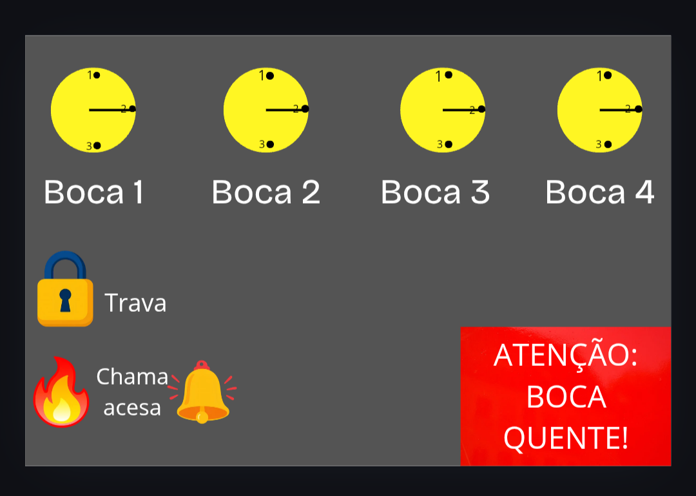

Meu nome é Rafael Roberty e estudo Sistemas para Internet. Como projetista, meu papel é fazer com que pessoas idosas ou com deficiências possam usar este site sem dificuldades. Criar soluções acessíveis é importante porque mostra que podemos encontrar solucões para os nossos problemas.

Meu painel tem 4 botões, grandes e amarelos, para que qualquer pessoa use com facilidade e segurança, mesmo com alguma deficiência.
Pensei em pessoas com baixa visão, por isso botei botões grandes. Para quem tem deficiência auditiva, coloquei um sistema de alerta. Para daltonismo, usei cores com contraste forte. Para cadeirantes e pessoas com nanismo, coloquei o painel na frente do fogão.
Apliquei o contraste com o amerelo sobre o cinza. Usei feedback com ícones de fogo e sino. A trava serve para evitar acidentes com crianças.
Usei amarelo nos botões porque são cores chamativas e faz com que pessoas com baixa visão ou daltonismo tenham mais facilidade de usar o site. O vermelho no aviso de boca quente serve para evitar acidentes com queimaduras. Os botões são redondos porque são bem intuitivos para os mais velhos e lembram o formato original no fogão. O sino indica que o fogo está acendido.